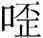

时 间 前场后不久，快到中午。
地 点 状元府门外。
人 物 门 役 李大妈 荷 珠 赵 鹏 随从四人 赵 旺
金三官 金贞凤
〔门役在状元府门外，信口哼唧着。
门 役 （哼唧）新修的状元府，朱门大铜环。状元心慈善，施粥又舍钱。打粥的、要钱的，有点不好管，我一拦呀，他们就翻脸！
〔李大妈搀荷珠上。荷珠带病，头罩鸳鸯帕。
李大妈 好姑娘啊，这里就是状元府，你去要点粥，求点钱吧！
荷 珠 多谢大娘！我自己去，大娘请回吧！
李大妈 好，再见吧，姑娘！（下）
荷 珠 （对门役）啊，差官！
门 役 干什么的？
荷 珠 听说这是状元府？
门 役 对！
荷 珠 听说这里施粥舍钱，周济穷人。
门 役 也对！
荷 珠 我从远道而来，无衣无食，求些周济！
门 役 年轻轻的，什么干不了啊，怎么要饭呢？
荷 珠 唉，我缝缝补补，浆浆洗洗，都干得来。怎奈这几天生病，真是屋漏偏逢连夜雨，船破又遇顶头风啊！
门 役 可是呀，你来晚了，粥也放完，钱也舍光了！
荷 珠 唉！真来得不巧！啊，差官，这是状元府，可要雇用使女？
门 役 又不凑巧！新科状元还没成亲，没有状元夫人，也就用不着丫环！
荷 珠 唉！既是如此，你看，风寒雪冷，叫我这带病的人在门洞里避避风雪吧！
门 役 我说，要饭的，别看我好说话，就麻烦上没完啊！状元有话，不准错待了穷人。可是，你也别不知好歹，一个劲儿麻烦我呀！你想想，状元府门前，能叫花子蹲着吗？那不成体统！
荷 珠 不行就罢，何必罗哩罗嗦！
门 役 你瞧

，脾气还不小！荷 珠 嗯！人穷志不短。我就讨厌狗仗人势的人！
门 役 我这儿耐着性儿跟你费吐沫，怎么说我狗仗人势呢？
荷 珠 （一阵眩晕）哎呀！（倒）
门 役 怎回事？怎回事？我不叫你在门洞里坐坐，你怎么爽性躺在这儿了呢？
〔四随从开路，引赵鹏上。
四随从 状元回府！
赵 鹏 （看见荷珠）啊？这是何人？
门 役 启禀状元公：这是个要饭的！
赵 鹏 既是要饭的，你为何不给她点粥呢？
门 役 粥都放完了。
赵 鹏 粥虽放完，你为何叫她倒卧在此，不管管呢？
门 役 那，那……
赵 鹏 （过去看）啊？鸳鸯帕？鸳鸯帕为何落在她的手里，莫非小姐……不能啊！若不是小姐，怎么头罩鸳鸯帕呢？来人哪，搀了进去，夫人到了！
门 役 得！我算碰在点子上了！
〔赵鹏与随从扶荷珠入。
门 役 留点神吧，再来个讨饭的，还许是状元的大舅子呢！
〔赵旺捧着空碗上。
赵 旺 真是的！刮风嘛，就别下雪！下雪嘛，就别刮风！偏偏风雪一齐来！好吧，我把你们顶回去！（用头顶风、雪）
门 役 （立好）又来了一个，就许是大舅子！
赵 旺 嗨，过来！
门 役 （要发火，又控制住）干什么的？
赵 旺 问问你：这是状元府么？
门 役 是状元府！
赵 旺 状元在家不在？
门 役 在家，怎样？
赵 旺 叫他给我两份儿粥，一吊钱！
门 役 气派不小啊！
赵 旺 本来是不小嘛！我是天地作房屋，日月当蜡烛，盖的是肚皮，铺着脊梁骨！再问你：状元姓什么呀？
门 役 要饭就要饭吧，管状元姓什么呢！（旁白）怎么又动气！（对赵旺）我们的状元姓赵。
赵 旺 我也姓赵。
门 役 幸而没发火！这还许是状元的哥哥呢！
赵 旺 告诉我：状元可叫赵鹏啊？
门 役 是！是！
赵 旺 （要进大门）赵相公！赵相公！
门 役 请等等，有事我去通禀一声。
〔金三官上。
金三官 赵旺！赵旺！我都快饿昏喽！
门 役 喝！又一个！也许是老丈人吧？
赵 旺 饿昏了，也得等我要到东西！告诉你，这是赵鹏的状元府，他中了状元！
金三官 啊？我的女婿中了状元？
门 役 嘿！真是老丈人！（急入）
赵 旺 他中了状元，你可得提防着点！
金三官 我不供给他念书，他中得了状元么？
赵 旺 你算了吧！谁拿大棍子把他赶出去的？
金三官 我会说，那不是我的主意！
赵 旺 是哪个杂种的主意？
金三官 是王兴的主意！这么一说，他必把我留下！然后，借着状元的势力，把我的财产都夺回来，再当老员外，老太爷！（掏出个烧饼吃）
赵 旺 怎么？你说饿昏了，可还藏着个烧饼！我要饭，给你吃，你还揣着坏心眼儿！
金三官 别生气，别生气！我当初不是给你下了跪，求你救我一命吗？这个烧饼不是你要来的！
赵 旺 哪儿来的？
金三官 我自己捡来的！
赵 旺 那么方便！满地是烧饼，谁还要饭？好啦，你等着状元。我赵旺告辞了！
金三官 走不得！见了状元，他必给你个差事，你就发财了哇！
赵 旺 你把我太看扁了！我发点善心是为发财吗？
金三官 不为你自己，还不帮帮我吗？状元见了我若是发了脾气，你得给我说说好话呀！
赵 旺 我不会扯谎！
金三官 你不出声就行了！你不说，他不知道贞凤的事呀！再说，你上哪儿去呢？
赵 旺 上哪儿都行，到处凭我这两只手，还喂不了这张口？你干你的，我干我的吧！状元收下你，好；不收，我也没办法！
金三官 别走！帮人帮到底！我再给你磕一个！赵旺，赵旺哥！
〔门役引赵鹏上。
赵 鹏 谁？赵旺哥？
赵 旺 哎呀，真是你呀？
赵 鹏 赵旺哥呀，救命的恩人，受我一拜！（拜）
金三官 （独白）行！有门儿！他给赵旺行礼，还不给老丈人磕头吗？（假嗽，没人理他）
赵 旺 赵相公，恭喜你中了状元！
赵 鹏 中状元也没有遇见你这么高兴！来呀！
门 役 在！
赵 鹏 端着恩人的碗！
门 役 是！（接碗）
赵 旺 慢来！慢来！你中了状元，我放了心！是呀，你脸上长了点肉，眉头也不那么皱着了，好！我放了心！这个碗我还用得着，自己端着吧！我还是找个地方，卖卖力气去吧！
赵 鹏 那万万不可！（拉赵旺）
赵 旺 慢着！留神摔了碗！（还想走）
赵 鹏 你总得进来，喝口水，吃点什么吧？我对你，是乘肥马，衣轻裘，与朋友共，敝之而无憾哪！
赵 旺 好吧，我进去看看，省得你一劲儿转文，越听越糊涂！状元请！
赵 鹏 赵旺哥请！
赵 旺 你我……那句怎么说？
赵 鹏 你我挽手而行！哈哈哈哈！
金三官 （过来扯赵旺的袖子）赵旺！赵旺！多照应，少说话！
赵 鹏 这是何人？
金三官 贤婿呀，想死我也！（假哭）
赵 鹏 啊？金三官？你还有脸来见我？
金三官 状元公啊！（跪）
赵 鹏 （冷笑）喝，喝喝喝喝！（拉赵旺入）
门 役 怪呀，哥哥进去了，老丈人怎么跪在这儿呢？
金三官 （立）老丈人给女婿下跪，是我们的家规！先给我端点吃的来，伺候好了我，有你的好处！伺候了！
〔金贞凤上。
金贞凤 这就好了！找到了状元府！啊！爹爹！爹爹，我也叫黄家赶出来了！
金三官 住口！（扯她躲开大门，耳语）